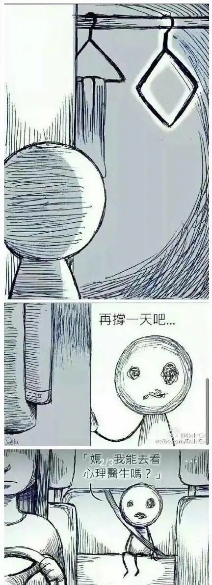

asuka 🏳️⚧️🍥🏳️🌈🏴
@H4lf_L13_F8964
@beijieyoufengle 摔倒在地上然后气胸，喘不上气快要憋死，家里让我别装了

鹅宝不是鹅🍥（三号机）
@beijieyoufengle
感觉中国人天生就是潜在的恐怖父母，很多大家习以为常的教育行为从原理上可能根本就错的离谱。下午弟弟摔了一跤在哭，保姆上前去哄，我妈赶忙说：“你假装不理他他就不会哭了。”
突然我意识到，这不就是情感忽视吗？多年以后，拿着解离障碍的诊断书，弟弟会不会回想起那个哭的撕心裂肺无人理会的下午？ https://t.co/T1CaxqlTQE